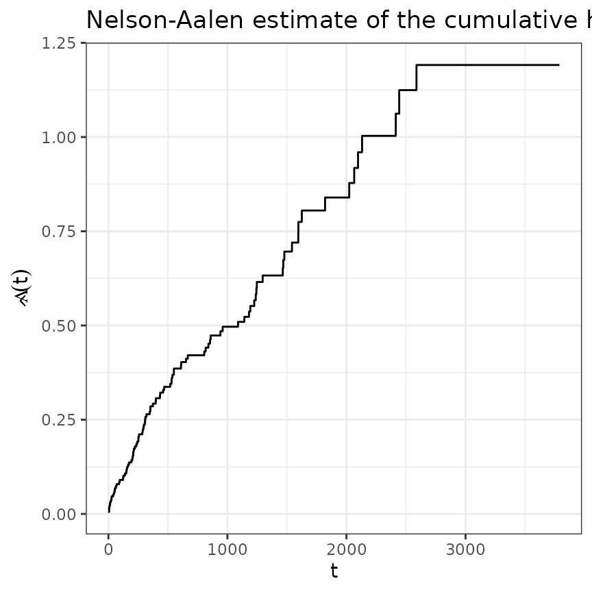
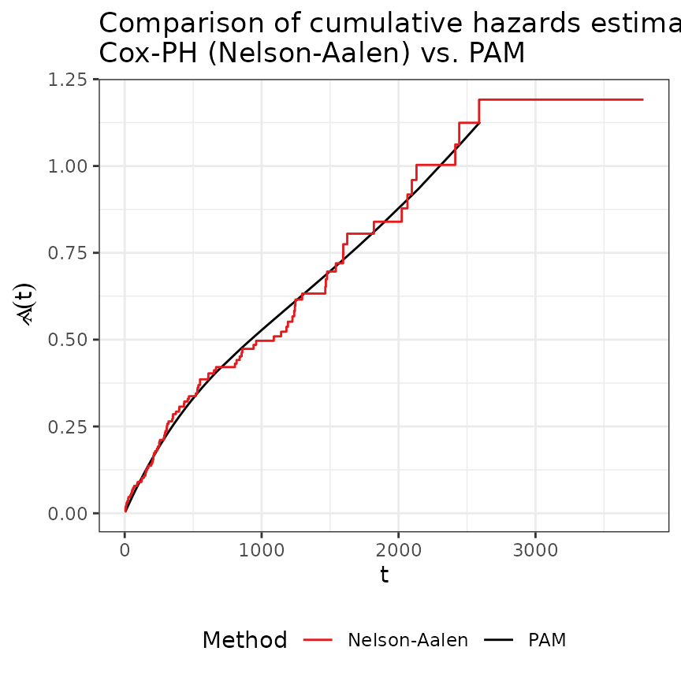

library(ggplot2)
theme_set(theme_bw())
library(dplyr)
library(survival)
library(mgcv)
library(pammtools)
Set1 <- RColorBrewer::brewer.pal(9, "Set1")Here we briefly demonstrate how to fit and visualize a simple
baseline model using the pammtools
package. We illustrate the procedure using a subset of the
tumor data from the pammtools
package:
## # A tibble: 6 × 9
## days status charlson_score age sex transfusion complications metastases
## <dbl> <int> <int> <int> <fct> <fct> <fct> <fct>
## 1 579 0 2 58 female yes no yes
## 2 1192 0 2 52 male no yes yes
## 3 308 1 2 74 female yes no yes
## 4 33 1 2 57 male yes yes yes
## 5 397 1 2 30 female yes no yes
## 6 1219 0 2 66 female yes no yes
## # ℹ 1 more variable: resection <fct>
tumor <- tumor[1:200,]The below graph depicts the estimated cumulative hazard using the Nelson-Aalen estimator:
base_df <- basehaz(coxph(Surv(days, status)~1, data = tumor)) %>%
rename(nelson_aalen = hazard)
ggplot(base_df, aes(x = time, y = nelson_aalen)) +
geom_stephazard() +
ylab(expression(hat(Lambda)(t))) + xlab("t") +
ggtitle("Nelson-Aalen estimate of the cumulative hazard")## Warning: Unknown or uninitialised column: `linewidth`.## Warning: Unknown or uninitialised column: `size`.
To fit a PAM, we first we need to bring the data in a suitable format (see vignette on data transformation).
# Use unique event times as interval break points
ped <- tumor %>% as_ped(Surv(days, status)~., id = "id")
head(ped[, 1:10])## id tstart tend interval offset ped_status charlson_score age sex
## 1 1 0 5 (0,5] 1.6094379 0 2 58 female
## 2 1 5 8 (5,8] 1.0986123 0 2 58 female
## 3 1 8 10 (8,10] 0.6931472 0 2 58 female
## 4 1 10 14 (10,14] 1.3862944 0 2 58 female
## 5 1 14 20 (14,20] 1.7917595 0 2 58 female
## 6 1 20 26 (20,26] 1.7917595 0 2 58 female
## transfusion
## 1 yes
## 2 yes
## 3 yes
## 4 yes
## 5 yes
## 6 yesPAMs estimate the baseline log-hazard rate semi-parametrically as a
smooth, non-linear function evaluated at the end-points
tend of the intervals defined for our model.
Note that the estimated log-hazard value at time-points
tend gives the value of the log-hazard rate for the
entire previous interval as PAMs estimate hazard rates
that are constant in each interval.
Estimating the log hazard rate as a smooth function evaluated at
tend - instead of using an unpenalized estimator without
such a smoothness assumption - ensures that the hazard rate does not
change too rapidly from interval to interval unless there is sufficient
evidence for such changes in the data.
##
## Family: poisson
## Link function: log
##
## Formula:
## ped_status ~ s(tend)
##
## Parametric coefficients:
## Estimate Std. Error z value Pr(>|z|)
## (Intercept) -7.4044 0.1115 -66.4 <2e-16 ***
## ---
## Signif. codes: 0 '***' 0.001 '**' 0.01 '*' 0.05 '.' 0.1 ' ' 1
##
## Approximate significance of smooth terms:
## edf Ref.df Chi.sq p-value
## s(tend) 2.188 2.72 12.37 0.00703 **
## ---
## Signif. codes: 0 '***' 0.001 '**' 0.01 '*' 0.05 '.' 0.1 ' ' 1
##
## R-sq.(adj) = -0.00673 Deviance explained = 1.34%
## UBRE = -0.91507 Scale est. = 1 n = 11619In the figure below we compare the previous baseline estimates of the Cox model with the PAM estimates.
# Create new data set with one row per unique interval
# and add information about the cumulative hazard estimate
int_df <- make_newdata(ped, tend = unique(tend)) %>%
add_cumu_hazard(pam)
gg_baseline <- ggplot(int_df, aes(x = tend)) +
geom_line(aes(y = cumu_hazard, col = "PAM")) +
geom_stephazard(data = base_df, aes(x=time, y = nelson_aalen, col = "Nelson-Aalen")) +
scale_color_manual(
name = "Method",
values = c("PAM" = "black", "Nelson-Aalen" = Set1[1])) +
theme(legend.position = "bottom") +
ylab(expression(hat(Lambda)(t))) + xlab("t") +
ggtitle(paste0("Comparison of cumulative hazards estimated by\n",
"Cox-PH (Nelson-Aalen) vs. PAM"))
Both models are in good agreement.